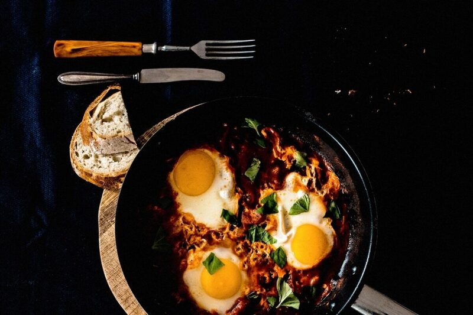

Breakfast
Classic Shakshuka
Eggs poached in a spiced tomato and pepper sauce, one skillet start to finish.
Vegetarian
Gluten-Free
Nut-Free

A North African and Eastern Mediterranean breakfast of eggs gently poached in a thick, cumin-scented tomato and pepper sauce. Scoop it up with warm bread straight from the pan.
Ingredients
For the sauce
- 3 tbsp olive oil
- 1 onion, finely chopped
- 1 red bell pepper, diced
- 3 cloves garlic, minced
- 1 tsp ground cumin
- 1 tsp smoked paprika
- 1/4 tsp chilli flakes, optional
- 800 g canned whole tomatoes, crushed by hand
- salt and black pepper to taste
To finish
- 5 eggs
- fresh parsley or cilantro, chopped, to garnish
- crumbled feta, optional
- warm bread or pita, to serve
Instructions
- 8 min
- 1 min
-
12 min
The sauce should hold its shape on a spoon before the eggs go in, or they'll swim instead of poach.
- 6 min
Notes
- For a firmer yolk, extend the covered cooking time by 2 minutes.
- The sauce alone keeps 3 days refrigerated -- make it ahead and poach eggs fresh to order.
Nutrition Facts
| Nutrient | Amount |
|---|---|
| Calories | 340 kcal |
| Total Fat | 22 g |
| Saturated Fat | 5 g |
| Carbohydrates | 18 g |
| Fiber | 5 g |
| Sugar | 9 g |
| Protein | 16 g |
| Sodium | 520 mg |
| Cholesterol | 310 mg |
| Values are estimates based on standard ingredient data, not laboratory analysis. | |
Photo: Unknown, CC0 1.0. Cropped to 3:2 and re-encoded as WebP/JPEG for web delivery.